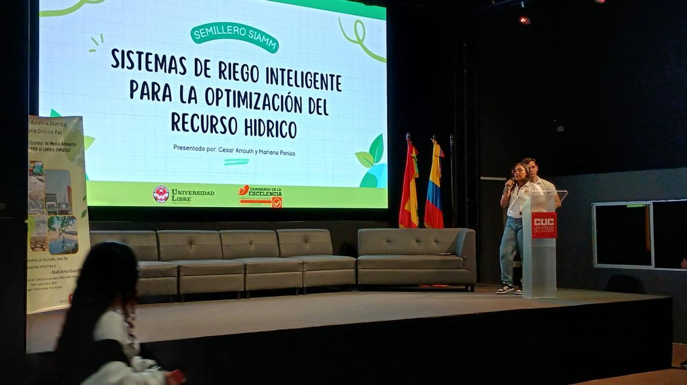

Nombre completo: Mariana Paniza Romero
Programa académico: Ingeniería Industrial
Semestre: Noveno (9°)
Soy una persona comprometida, responsable, trabajadora y recursiva, con capacidad de adaptación a diferentes entornos y cambios, tanto académicos como profesionales.

La imagen corresponde a la presentación del proyecto “Sistemas de riego inteligente para la optimización del recurso hídrico”, desarrollado en el marco de un semillero de investigación, el cual se relaciona con la Ingeniería Industrial mediante la optimización de recursos, procesos y sostenibilidad.
Espero adquirir habilidades en programación que me permitan comprender mejor los procesos tecnológicos y aplicar estos conocimientos en futuros escenarios académicos y profesionales relacionados con la Ingeniería Industrial.